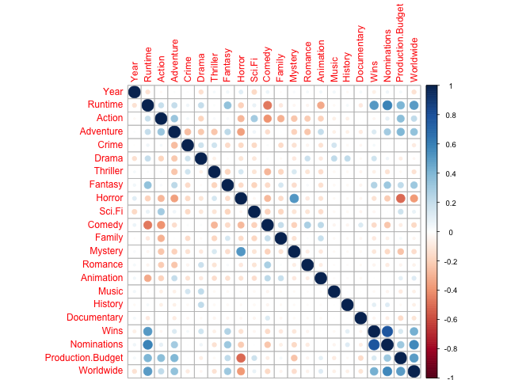
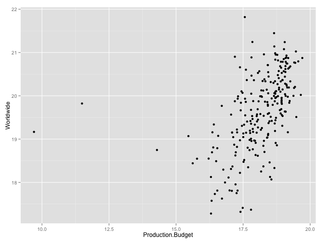
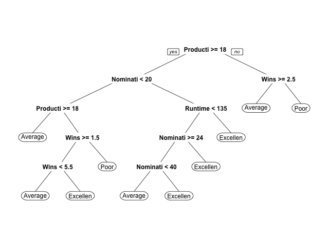

The Analytical Edge. Final Evaluation
The Analytical Edge Final Evaluation
1 Final Evaluation
This short final evaluation is designed to assess your knowledge of analytics at the end of this course. It will give us important insight into what you and your fellow students know at the end of the course compared to the beginning the course , and will help us improve the course in the future. Please answer the questions as honestly as possible.
You will get credit for completing this evaluation, but there are no right or wrong answers (every answer will be marked as correct). Completing this evaluation is worth 1% of your final grade in this course.
1.1 Question 1.1 - Software (1 point possible)
Do you have any experience using a programming language? Examples are R, python, C, C++, Java, php, and SQL.
[X]Yes, I am comfortable using a programming language.[ ]Yes, but I am not very comfortable using it.[ ]Yes, but very minimally.[ ]No, I have never used a programming language.
1.2 Question 1.2 - Software (1 point possible)
Have you ever used any analytics software? Some examples are R, SAS, Stata, pandas, and Microsoft Excel Statistical Add-ins, like XLMiner and the Analysis ToolPak.
[X]Yes, I'm very comfortable using analytics software.[ ]Yes, but I'm not very comfortable using the software.[ ]Yes, but very minimally.[ ]No, I have never used analytics software.
1.3 Question 2.1 - Linear Regression (1 point possible)
Have you ever learned about the method of linear regression?
[X]Yes, I've learned about linear regression before.[ ]No, I've never learned about linear regression.[ ]I'm not sure.
1.4 Question 2.2 - Linear Regression (1 point possible)
Which of the following situations is a linear regression model designed to handle? If you don't know the answer, just select "I don't know".
[ ]Situation 1: A factory wants to decide how many machines of different types to purchase so that they can increase their production next month. They want to maximize total revenue, while not spending more than $100,000 on new machines. (Optimization :: Maximize)[X]Situation 2: A clothing store wants to predict their total revenue next month using the total sales this month, the types of styles that will be released next month, and seasonality. (Linear regression)[ ]Situation 3: A medical researcher wants to predict whether or not a patient will be re-admitted to the hospital, using information from the patient's medical record (e.g. demographic information, medical history, doctor's free-text notes). (Logistic Regression, CART or RF)[ ]Situation 4: An airline wants to use historical data to segment their customers into different categories to better understand the different types of customers they have and to target them with advertisements. (Logistic Regression, CART or RF)[ ]Situation 5: A chicken feed company wants to decide what percentage of four different grains to use to create a new product. They want to minimize the total cost of the product, while making sure that it meet all of the nutritional requirements for chicken feed. (Optimization :: Minimize)[ ]Situations 2 and 3.[ ]Situations 1 and 5.[ ]Situations 1, 2, 3, 4, and 5.[ ]None of the above situations.[ ]I don't know.
1.5 Question 2.3 - Linear Regression (1 point possible)
Have you ever created a linear regression model using any software package?
[X]Yes, within the past year.[ ]Yes, but not within the past year.[ ]No.[ ]I'm not sure.
1.6 Question 3.1 - Logistic Regression (1 point possible)
Have you ever learned about the method of logistic regression?
[X]Yes, I've learned about logistic regression before.[ ]No, I've never learned about logistic regression.[ ]I'm not sure.
1.7 Question 3.2 - Logistic Regression (1 point possible)
Which of the following situations is a logistic regression model designed to handle? If you don't know the answer, just select "I don't know".
[ ]Situation 1: A factory wants to decide how many machines of different types to purchase so that they can increase their production next month. They want to maximize total revenue, while not spending more than $100,000 on new machines. (Optimization :: Maximize)[ ]Situation 2: A clothing store wants to predict their total revenue next month using the total sales this month, the types of styles that will be released next month, and seasonality. (Linear regression)[X]Situation 3: A medical researcher wants to predict whether or not a patient will be re-admitted to the hospital, using information from the patient's medical record (e.g. demographic information, medical history, doctor's free-text notes). (Logistic Regression, CART or RF)[ ]Situation 4: An airline wants to use historical data to segment their customers into different categories to better understand the different types of customers they have and to target them with advertisements. (Clustering, CART or RF)[ ]Situation 5: A chicken feed company wants to decide what percentage of four different grains to use to create a new product. They want to minimize the total cost of the product, while making sure that it meet all of the nutritional requirements for chicken feed. (Optimization :: Minimize)[ ]Situations 2 and 3.[ ]Situations 1 and 5.[ ]Situations 1, 2, 3, 4, and 5.[ ]None of the above situations.[ ]I don't know.
1.8 Question 3.3 - Logistic Regression (1 point possible)
Have you ever created a logistic regression model using any software package?
[X]Yes, within the past year.[ ]Yes, but not within the past year.[ ]No.[ ]I'm not sure.
1.9 Question 4.1 - CART and Random Forests (1 point possible)
Have you ever learned about the methods of CART and Random Forests?
[X]Yes, I've learned about both of them.[ ]I've learned about one of these methods.[ ]No, I've never learned about either of them.[ ]I'm not sure.
1.10 Question 4.2 - CART and Random Forests (1 point possible)
Which of the following situations is a CART or Random Forest model designed to handle? If you don't know the answer, just select "I don't know".
[ ]Situation 1: A factory wants to decide how many machines of different types to purchase so that they can increase their production next month. They want to maximize total revenue, while not spending more than $100,000 on new machines. (Optimization :: Maximize)[ ]Situation 2: A clothing store wants to predict their total revenue next month using the total sales this month, the types of styles that will be released next month, and seasonality. (Linear regression)[X]Situation 3: A medical researcher wants to predict whether or not a patient will be re-admitted to the hospital, using information from the patient's medical record (e.g. demographic information, medical history, doctor's free-text notes). (Logistic Regression, CART or RF)[X]Situation 4: An airline wants to use historical data to segment their customers into different categories to better understand the different types of customers they have and to target them with advertisements. (Logistic Regression, CART or RF)[ ]Situation 5: A chicken feed company wants to decide what percentage of four different grains to use to create a new product. They want to minimize the total cost of the product, while making sure that it meet all of the nutritional requirements for chicken feed. (Optimization :: Minimize)[ ]Situations 2 and 3.[ ]Situations 1 and 5.[ ]Situations 1, 2, 3, 4, and 5.[ ]None of the above situations.[ ]I don't know.
1.11 Question 4.3 - CART and Random Forests (1 point possible)
Have you ever created a CART or Random Forest model using any software package?
[ ]Yes, I've created at least one of these models within the past year.[X]Yes, I've created at least one of these models, but not within the past year.[ ]No, I've never created either of these models.[ ]I'm not sure.
1.12 Question 5.1 - Bag of Words (1 point possible)
Have you ever learned about the text analytics method called "bag of words"?
[X]Yes, I've learned about the bag of words method.[ ]No, I've never learned about the bag of words method.[ ]I'm not sure.
1.13 Question 5.2 - Bag of Words (1 point possible)
Which of the following situations is the bag of words approach designed to handle? If you don't know the answer, just select "I don't know".
[ ]Situation 1: A factory wants to decide how many machines of different types to purchase so that they can increase their production next month. They want to maximize total revenue, while not spending more than $100,000 on new machines. (Optimization :: Maximize)[ ]Situation 2: A clothing store wants to predict their total revenue next month using the total sales this month, the types of styles that will be released next month, and seasonality. (Linear regression)[X]Situation 3: A medical researcher wants to predict whether or not a patient will be re-admitted to the hospital, using information from the patient's medical record (e.g. demographic information, medical history, doctor's free-text notes). (Bag of words, Logistic Regression, CART or RF)[ ]Situation 4: An airline wants to use historical data to segment their customers into different categories to better understand the different types of customers they have and to target them with advertisements. (Logistic Regression, CART or RF)[ ]Situation 5: A chicken feed company wants to decide what percentage of four different grains to use to create a new product. They want to minimize the total cost of the product, while making sure that it meet all of the nutritional requirements for chicken feed. (Optimization :: Minimize)[ ]Situations 2 and 3.[ ]Situations 1 and 5.[ ]Situations 1, 2, 3, 4, and 5.[ ]None of the above situations.[ ]I don't know.
1.14 Question 5.3 - Bag of Words (1 point possible)
Have you ever created a bag of words model using any software package?
[X]Yes, within the past year.[ ]Yes, but not within the past year.[ ]No.[ ]I'm not sure.
1.15 Question 6.1 - Clustering (1 point possible)
Have you ever learned about Hierarchical Clustering or K-Means Clustering?
[X]Yes, I've learned about both of them.[ ]I've learned about one of these methods.[ ]No, I've never learned about either of them.[ ]I'm not sure.
1.16 Question 6.2 - Clustering (1 point possible)
Which of the following situations is a clustering model designed to handle? If you don't know the answer, just select "I don't know".
[ ]Situation 1: A factory wants to decide how many machines of different types to purchase so that they can increase their production next month. They want to maximize total revenue, while not spending more than $100,000 on new machines. (Optimization :: Maximize)[ ]Situation 2: A clothing store wants to predict their total revenue next month using the total sales this month, the types of styles that will be released next month, and seasonality. (Linear regression)[X]Situation 3: A medical researcher wants to predict whether or not a patient will be re-admitted to the hospital, using information from the patient's medical record (e.g. demographic information, medical history, doctor's free-text notes). (Logistic Regression, CART or RF)[X]Situation 4: An airline wants to use historical data to segment their customers into different categories to better understand the different types of customers they have and to target them with advertisements. (Logistic Regression, CART or RF)[ ]Situation 5: A chicken feed company wants to decide what percentage of four different grains to use to create a new product. They want to minimize the total cost of the product, while making sure that it meet all of the nutritional requirements for chicken feed. (Optimization :: Minimize)[ ]Situations 2 and 3.[ ]Situations 1 and 5.[ ]Situations 1, 2, 3, 4, and 5.[ ]None of the above situations.[ ]I don't know.
1.17 Question 6.3 - Clustering (1 point possible)
Have you ever created a Hierarchical Clustering or K-means Clustering model using any software package?
[X]Yes, I've created at least one of these models within the past year.[ ]Yes, I've created at least one of these models, but not within the past year.[ ]No, I've never created either of these models.[ ]I'm not sure.
1.18 Question 7.1 - Visualization (1 point possible)
Have you ever learned about data visualization (e.g. scatter plots, line plots, heat maps, geographical maps)?
[X]Yes, I've learned about data visualization, including scatterplots, line plots, heat maps, and geographical maps.[ ]I've learned about some data visualization, but not all of the types listed above.[ ]No, I've never learned about data visualization.[ ]I'm not sure.
1.19 Question 7.2 - Visualization (1 point possible)
Which of the following situations is data visualization designed to handle? If you don't know the answer, just select "I don't know".
[X]Situation 1: A factory wants to decide how many machines of different types to purchase so that they can increase their production next month. They want to maximize total revenue, while not spending more than $100,000 on new machines. (Optimization :: Maximize)[X]Situation 2: A clothing store wants to predict their total revenue next month using the total sales this month, the types of styles that will be released next month, and seasonality. (Linear regression)[X]Situation 3: A medical researcher wants to predict whether or not a patient will be re-admitted to the hospital, using information from the patient's medical record (e.g. demographic information, medical history, doctor's free-text notes). (Logistic Regression, CART or RF)[X]Situation 4: An airline wants to use historical data to segment their customers into different categories to better understand the different types of customers they have and to target them with advertisements. (Logistic Regression, CART or RF)[X]Situation 5: A chicken feed company wants to decide what percentage of four different grains to use to create a new product. They want to minimize the total cost of the product, while making sure that it meet all of the nutritional requirements for chicken feed. (Optimization :: Minimize)[ ]Situations 2 and 3.[ ]Situations 1 and 5.[X]Situations 1, 2, 3, 4, and 5.[ ]None of the above situations.[ ]I don't know.
1.20 Question 7.3 - Visualization (1 point possible)
Have you ever created a data visualization (e.g. scatterplot, line plot, heat map, geographical map) using any software package?
[X]Yes, within the past year.[ ]Yes, but not within the past year.[ ]No.[ ]I'm not sure.
1.21 Question 8.1 - Linear Optimization (1 point possible)
Have you ever learned about linear optimization (also called linear programming)?
[X]Yes, I've learned about linear optimization.[ ]No, I've never learned about linear optimization.[ ]I'm not sure.
1.22 Question 8.2 - Linear Optimization (1 point possible)
Which of the following situations is a linear optimization model designed to handle? If you don't know the answer, just select "I don't know".
[X]Situation 1: A factory wants to decide how many machines of different types to purchase so that they can increase their production next month. They want to maximize total revenue, while not spending more than $100,000 on new machines. (Optimization :: Maximize)[ ]Situation 2: A clothing store wants to predict their total revenue next month using the total sales this month, the types of styles that will be released next month, and seasonality. (Linear regression)[ ]Situation 3: A medical researcher wants to predict whether or not a patient will be re-admitted to the hospital, using information from the patient's medical record (e.g. demographic information, medical history, doctor's free-text notes). (Logistic Regression, CART or RF)[ ]Situation 4: An airline wants to use historical data to segment their customers into different categories to better understand the different types of customers they have and to target them with advertisements. (Logistic Regression, CART or RF)[X]Situation 5: A chicken feed company wants to decide what percentage of four different grains to use to create a new product. They want to minimize the total cost of the product, while making sure that it meet all of the nutritional requirements for chicken feed. (Optimization :: Minimize)[ ]Situations 2 and 3.[X]Situations 1 and 5.[ ]Situations 1, 2, 3, 4, and 5.[ ]None of the above situations.[ ]I don't know.
1.23 Question 8.3 - Linear Optimization (1 point possible)
Have you ever created a linear optimization model using any software package?
[X]Yes, within the past year.[ ]Yes, but not within the past year.[ ]No.[ ]I'm not sure.
1.24 Question 9.1 - Integer Optimization (1 point possible)
Have you ever learned about integer optimization (also called integer programming)?
[X]Yes, I've learned about integer optimization. Yes, I've learned about integer optimization. - correct[ ]No, I've never learned about integer optimization.[ ]I'm not sure.
1.25 Question 9.2 - Integer Optimization (1 point possible)
Which of the following situations is an integer optimization model designed to handle? If you don't know the answer, just select "I don't know".
[ ]Situation 1: A factory wants to decide how many machines of different types to purchase so that they can increase their production next month. They want to maximize total revenue, while not spending more than $100,000 on new machines. (Optimization :: Maximize)[ ]Situation 2: A clothing store wants to predict their total revenue next month using the total sales this month, the types of styles that will be released next month, and seasonality. (Linear regression)[ ]Situation 3: A medical researcher wants to predict whether or not a patient will be re-admitted to the hospital, using information from the patient's medical record (e.g. demographic information, medical history, doctor's free-text notes). (Logistic Regression, CART or RF)[ ]Situation 4: An airline wants to use historical data to segment their customers into different categories to better understand the different types of customers they have and to target them with advertisements. (Logistic Regression, CART or RF)[ ]Situation 5: A chicken feed company wants to decide what percentage of four different grains to use to create a new product. They want to minimize the total cost of the product, while making sure that it meet all of the nutritional requirements for chicken feed. (Optimization :: Minimize)[ ]Situations 2 and 3.[X]Situations 1 and 5.[ ]Situations 1, 2, 3, 4, and 5.[ ]None of the above situations.[ ]I don't know.
1.26 Question 9.3 - Integer Optimization (1 point possible)
Have you ever created an integer optimization model using any software package?
[X]Yes, within the past year.[ ]Yes, but not within the past year.[ ]No.[ ]I'm not sure.
2 Final Exam
2.1 Instructions
Please read and understand these instructions carefully before starting the final exam.
Posts on the discussion forum about the final exam are not allowed. The staff will be proactive in removing posts about the final exam, and those caught posting about the final may have their account disabled and their progress erased. If you have clarification questions or you believe there might be a mistake in the exam, please send an email to mit15071x@gmail.com, and we will respond to your email as soon as possible. You should not send emails asking for specific help on the problems though - this is only for clarification questions or potential mistakes regarding the final exam.
We have designed the Explanations differently in the final exam than the ones you are used to in the homework assignments. The Explanations here will serve as hints to give you the name of the functions you should have used, or a logical explanation of the answer. They do not provide R code.
This final exam consists of four questions, with multiple parts to each question. You are allowed to use any materials from this class while working on the final exam, but please do not use outside materials. You answers should represent your work and your work alone.
3 Part 1. Predicting Box Office revenue [15/17]
Each year, box offices at movie theaters collect billions of dollars in revenue in the United States alone. In this problem, we seek to determine whether or not we can predict box office revenue based on different variables related to a movie.
In this problem, we'll use a dataset of 334 movies that were produced from 1953 to 2015. The dataset Movies.csv includes the following 24 variables:
- Name = the name of the movie
- Year = the year the movie was produced
- Rated = the rating given to the movie by the MPAA
- Runtime = the duration of the movie in minutes
- Action = binary variable that takes value 1 if the movie is an action movie, 0 otherwise
- Adventure, Crime, Drama, Thriller, Fantasy, Horror, Sci.Fi, Comedy, Family, Mystery, Romance, Animation, Music, History, Documentary are all defined like Action
- Wins = number of awards won by the movie
- Nominations = number of awards the movie was nominated for
- Production.Budget = the natural logarithm of the production budget in dollars
- Worldwide = the natural logarithm of the worldwide revenue in dollars
3.1 DONE Problem 1 - Loading the Data (2 points possible)
Load the dataset Movies.csv into R and call it "Movies". In this problem, we will build a model to predict worldwide box office revenue for movies made in 2010-2015.
library(parallel) if(!file.exists("../data")) { dir.create("../data") } fileUrl <- "https://courses.edx.org/asset-v1:MITx+15.071x_2a+2T2015+type@asset+block/Movies.csv" fileName <- "MoviesP1Final.csv" dataPath <- "../data" filePath <- paste(dataPath, fileName, sep = "/") if(!file.exists(filePath)) { download.file(fileUrl, destfile = filePath, method = "curl") } writeLines("\n :: File downloaded...")
:: File downloaded...
Create a training set that consists of movies released before 2010 and a testing set that consists of movies released in 2010 and after.
writeLines("\n :: Loading data into their data frame.") Movies <- read.csv("../data/MoviesP1Final.csv") str(Movies)
:: Loading data into their data frame. 'data.frame': 334 obs. of 24 variables: $ Name : Factor w/ 334 levels "2 Fast 2 Furious",..: 28 32 31 29 30 247 248 4 5 6 ... $ Year : int 1989 1992 1995 1997 2005 2008 2012 2002 2006 2014 ... $ Rated : Factor w/ 6 levels "Approved","G",..: 5 5 5 5 5 3 5 6 6 6 ... $ Runtime : int 126 126 121 125 140 152 165 113 117 102 ... $ Action : int 1 1 1 1 1 1 1 0 1 1 ... $ Adventure : int 1 0 1 0 1 0 0 0 0 0 ... $ Crime : int 0 0 0 0 0 1 0 0 0 0 ... $ Drama : int 0 0 0 0 0 1 0 0 0 1 ... $ Thriller : int 0 0 0 0 0 0 1 0 0 0 ... $ Fantasy : int 0 0 1 0 0 0 0 0 1 1 ... $ Horror : int 0 0 0 0 0 0 0 1 0 0 ... $ Sci.Fi : int 0 0 0 0 0 0 0 0 0 0 ... $ Comedy : int 0 0 0 0 0 0 0 0 0 0 ... $ Family : int 0 0 0 0 0 0 0 0 0 0 ... $ Mystery : int 0 0 0 0 0 0 0 0 0 0 ... $ Romance : int 0 0 0 0 0 0 0 0 0 0 ... $ Animation : int 0 0 0 0 0 0 0 0 0 0 ... $ Music : int 0 0 0 0 0 0 0 0 0 0 ... $ History : int 0 0 0 0 0 0 0 0 0 0 ... $ Documentary : int 0 0 0 0 0 0 0 0 0 0 ... $ Wins : int 10 2 9 5 15 134 43 10 12 0 ... $ Nominations : int 21 16 20 20 49 106 83 25 30 6 ... $ Production.Budget: num 18.1 18.9 19.1 19.2 19.1 ... $ Worldwide : num 20.6 20.1 20.3 19.9 20 ...
Lets change the the type of the Name feature to a character R type.
writeLines("\n :: Converting the name to a character type...") Movies$Name <- as.character(Movies$Name) summary(Movies)
:: Converting the name to a character type...
Name Year Rated Runtime
Length:334 Min. :1953 Approved: 1 Min. : 72.0
Class :character 1st Qu.:2001 G : 11 1st Qu.: 94.0
Mode :character Median :2005 N/A : 8 Median :108.0
Mean :2004 PG : 77 Mean :112.1
3rd Qu.:2010 PG-13 :139 3rd Qu.:125.8
Max. :2015 R : 98 Max. :201.0
Action Adventure Crime Drama
Min. :0.000 Min. :0.000 Min. :0.0000 Min. :0.00000
1st Qu.:0.000 1st Qu.:0.000 1st Qu.:0.0000 1st Qu.:0.00000
Median :1.000 Median :0.000 Median :0.0000 Median :0.00000
Mean :0.515 Mean :0.491 Mean :0.1287 Mean :0.08982
3rd Qu.:1.000 3rd Qu.:1.000 3rd Qu.:0.0000 3rd Qu.:0.00000
Max. :1.000 Max. :1.000 Max. :1.0000 Max. :1.00000
Thriller Fantasy Horror Sci.Fi
Min. :0.0000 Min. :0.0000 Min. :0.0000 Min. :0.0000
1st Qu.:0.0000 1st Qu.:0.0000 1st Qu.:0.0000 1st Qu.:0.0000
Median :0.0000 Median :0.0000 Median :0.0000 Median :0.0000
Mean :0.1737 Mean :0.1647 Mean :0.1377 Mean :0.1946
3rd Qu.:0.0000 3rd Qu.:0.0000 3rd Qu.:0.0000 3rd Qu.:0.0000
Max. :1.0000 Max. :1.0000 Max. :1.0000 Max. :1.0000
Comedy Family Mystery Romance
Min. :0.0000 Min. :0.0000 Min. :0.00000 Min. :0.0000
1st Qu.:0.0000 1st Qu.:0.0000 1st Qu.:0.00000 1st Qu.:0.0000
Median :0.0000 Median :0.0000 Median :0.00000 Median :0.0000
Mean :0.3293 Mean :0.1138 Mean :0.08084 Mean :0.0509
3rd Qu.:1.0000 3rd Qu.:0.0000 3rd Qu.:0.00000 3rd Qu.:0.0000
Max. :1.0000 Max. :1.0000 Max. :1.00000 Max. :1.0000
Animation Music History Documentary
Min. :0.0000 Min. :0.000000 Min. :0.000000 Min. :0.000000
1st Qu.:0.0000 1st Qu.:0.000000 1st Qu.:0.000000 1st Qu.:0.000000
Median :0.0000 Median :0.000000 Median :0.000000 Median :0.000000
Mean :0.1048 Mean :0.008982 Mean :0.002994 Mean :0.008982
3rd Qu.:0.0000 3rd Qu.:0.000000 3rd Qu.:0.000000 3rd Qu.:0.000000
Max. :1.0000 Max. :1.000000 Max. :1.000000 Max. :1.000000
Wins Nominations Production.Budget Worldwide
Min. : 0.000 Min. : 0.00 Min. : 9.703 Min. :17.28
1st Qu.: 1.000 1st Qu.: 4.00 1st Qu.:17.573 1st Qu.:19.04
Median : 3.000 Median : 11.00 Median :18.381 Median :19.76
Mean : 8.449 Mean : 16.85 Mean :18.116 Mean :19.65
3rd Qu.: 9.750 3rd Qu.: 22.00 3rd Qu.:18.881 3rd Qu.:20.33
Max. :164.000 Max. :106.00 Max. :19.707 Max. :21.82
Now we can split the dataset into two datasets in order to have both training and testing datasets
writeLines("\n :: Building the training and testing sets:") MoviesTrain <- subset(Movies, Movies$Year <= 2009) writeLines("\n :: Number of observations in the training set:") nrow(MoviesTrain) MoviesTest <- subset(Movies, Movies$Year >= 2010) writeLines("\n :: Number of observations on the test set:") nrow(MoviesTest)
:: Building the training and testing sets: :: Number of observations in the training set: [1] 248 :: Number of observations on the test set: [1] 86
3.1.1 Question a
How many observations are in the training set MoviesTrain?
3.1.1.1 Answer
248 observations exist in the MoviesTrain set.
3.1.2 Question b
How many observations are in the testing set MoviesTest?
3.1.2.1 Answer
86 observations are available in the MoviesTest set.
Explanation
The dataset can be loaded into R using the read.csv function. After
following the lines given to split the data, the number of
observations can be found with the nrow or str functions.
3.2 DONE Problem 2 - Method of Splitting the Data (1 point possible)
In this class, we have frequently used the sample.split function to randomly split our data. Why do we use a different approach here? Check all that apply.
[X]We don't want to randomly split our data here, so the sample.split function is not appropriate.[X]The sample.split function is typically used to split data with a categorical dependent variable, and we have a continuous dependent variable.[ ]The sample.split function is typically used to split data with a continuous dependent variable, and we have a categorical dependent variable.[ ]The sample.split function will give an error message if our dependent variable is not a factor variable.[ ]We have too many observations for the sample.split function to work.
Explanation
The sample.split function is used to split data for a classification
problem (a categorical dependent variable) and we have a continuous
dependent variable here. We also do not wish to split our data
randomly.
3.3 DONE Problem 3 - A Linear Regression Model (1 point possible)
Build a linear regression model to predict Worldwide based on all of
the remaining variables, except for Name and Year. Use the training
set to build the model. If your training set is called MoviesTrain, an
easy way to do this it to pass the argument
data = MoviesTrain[ , 3:ncol(MoviesTrain)]
to the lm function.
writeLines("\n :: Regression model to predict WorldWide revenue:") names(MoviesTrain) MoviesLinearReg <- lm(Worldwide ~ ., data = MoviesTrain[ , 3:ncol(MoviesTrain)]) summary(MoviesLinearReg)
:: Regression model to predict WorldWide revenue:
[1] "Name" "Year" "Rated"
[4] "Runtime" "Action" "Adventure"
[7] "Crime" "Drama" "Thriller"
[10] "Fantasy" "Horror" "Sci.Fi"
[13] "Comedy" "Family" "Mystery"
[16] "Romance" "Animation" "Music"
[19] "History" "Documentary" "Wins"
[22] "Nominations" "Production.Budget" "Worldwide"
Call:
lm(formula = Worldwide ~ ., data = MoviesTrain[, 3:ncol(MoviesTrain)])
Residuals:
Min 1Q Median 3Q Max
-1.8311 -0.3893 0.0809 0.3906 1.6326
Coefficients:
Estimate Std. Error t value Pr(>|t|)
(Intercept) 15.9976766 1.1580192 13.815 < 2e-16 ***
RatedG 0.4102319 0.7041759 0.583 0.560774
RatedN/A 0.5562304 0.7322003 0.760 0.448258
RatedPG 0.7090507 0.6892058 1.029 0.304696
RatedPG-13 0.6027509 0.7107462 0.848 0.397322
RatedR 0.4127760 0.7210913 0.572 0.567608
Runtime 0.0097079 0.0032359 3.000 0.003007 **
Action 0.0172144 0.1333332 0.129 0.897389
Adventure -0.2232011 0.1283551 -1.739 0.083432 .
Crime -0.3315595 0.1473878 -2.250 0.025457 *
Drama -0.2097674 0.1881216 -1.115 0.266029
Thriller -0.1067814 0.1364400 -0.783 0.434682
Fantasy 0.1634927 0.1406340 1.163 0.246264
Horror -0.6173923 0.2056864 -3.002 0.002993 **
Sci.Fi -0.0147251 0.1353512 -0.109 0.913466
Comedy -0.1431461 0.1611241 -0.888 0.375276
Family -0.3206547 0.1780467 -1.801 0.073067 .
Mystery 0.1454495 0.1837735 0.791 0.429520
Romance -0.0449227 0.2063239 -0.218 0.827840
Animation 0.6116779 0.2085349 2.933 0.003706 **
Music -0.1531571 0.6860353 -0.223 0.823546
History -1.3823299 0.6876694 -2.010 0.045624 *
Documentary -0.4480795 0.4830499 -0.928 0.354620
Wins 0.0003704 0.0039940 0.093 0.926186
Nominations 0.0159878 0.0043745 3.655 0.000321 ***
Production.Budget 0.1104362 0.0550254 2.007 0.045962 *
---
Signif. codes: 0 ‘***’ 0.001 ‘**’ 0.01 ‘*’ 0.05 ‘.’ 0.1 ‘ ’ 1
Residual standard error: 0.6431 on 222 degrees of freedom
Multiple R-squared: 0.5413, Adjusted R-squared: 0.4896
F-statistic: 10.48 on 25 and 222 DF, p-value: < 2.2e-16
3.3.1 Question
What is the model's R-squared? (Please report the "Multiple R-squared" value in the output.)
3.3.1.1 Answer
Multiple R-squared: 0.5413
Explanation
You can build the linear regression model using the lm function, and
find the R-squared by looking at the summary of the resulting model.
3.4 DONE Problem 4 - Checking for Significance (1 point possible)
In your linear regression model, which of the independent variables are significant at the p=0.05 level (at least one star)? For factor variables, consider the variable significant if at least one level is significant. Select all that apply.
[ ]Rated[X]Runtime[ ]Action[ ]Adventure[X]Crime[ ]Drama[ ]Thriller[ ]Fantasy[X]Horror[ ]Sci.Fi[ ]Comedy[ ]Family[ ]Mystery[ ]Romance[X]Animation[ ]Music[X]History[ ]Documentary[ ]Wins[X]Nominations[X]Production.Budget
Explanation
The significance can be found by looking at the summary output.
3.5 DONE Problem 5 - Correlations (2 points possible)
3.5.1 Question a
What is the correlation between Worldwide and Production.Budget in the training set?
3.5.1.1 Answer
We can plot the data in order to know the big picture
writeLines("\n :: Calculating the entire correlation matrix...") MoviesTrainCor <- cor(MoviesTrain[, c(-1, -3)])
:: Calculating the entire correlation matrix...
Now we can plot the correlation matrix

Figure 1: The MoviesTrain dataset correlation plot
We can see some kind of correlation between Worldwide and
Production.Budget.
Lets see how looks like in a scatter plot

Figure 2: Worldwide vs. Production.Budget plot
We can calculate the correlation directly
writeLines("\n :: The correlation between Worldwide and Production.Budget:")
cor(MoviesTrain$Worldwide, MoviesTrain$Production.Budget)
:: The correlation between Worldwide and Production.Budget: [1] 0.4947683
3.5.1.2 Answer
Explanation
The correlations can be computed using the cor function.
3.5.2 Question b
Given this value, should Production.Budget be included in the model?
[X]Yes, it has high predictive value since the independent variable is correlated with a dependent variable.[ ]No, having highly correlated variables in a regression model can affect the quality of the resulting predictions.
Explanation
A strong correlation between an independent variable and the dependent variable suggests high predictive value.
3.6 DONE Problem 6 - An Updated Model (1 point possible)
Create a new linear regression model on the training set with only the significant variables you found in Problem 4 as the independent variables. Going forward, we will only consider this linear regression model.
writeLines("\n :: Subsetting the most significant features...") MoviesTrain <- MoviesTrain[, c(4, 7, 11, 17, 19, 22, 23, 24)] writeLines("\n :: Regression model to predict WorldWide revenue:") MoviesLinearReg2 <- lm(Worldwide ~ ., data = MoviesTrain) summary(MoviesLinearReg2)
:: Subsetting the most significant features...
:: Regression model to predict WorldWide revenue:
Call:
lm(formula = Worldwide ~ ., data = MoviesTrain)
Residuals:
Min 1Q Median 3Q Max
-1.87336 -0.36913 0.07701 0.37701 1.93620
Coefficients:
Estimate Std. Error t value Pr(>|t|)
(Intercept) 15.531741 0.803224 19.337 < 2e-16 ***
Runtime 0.010095 0.002634 3.833 0.000162 ***
Crime -0.293315 0.120701 -2.430 0.015829 *
Horror -0.427419 0.141596 -3.019 0.002814 **
Animation 0.465257 0.166530 2.794 0.005629 **
History -1.556980 0.650418 -2.394 0.017443 *
Nominations 0.017313 0.003010 5.751 2.68e-08 ***
Production.Budget 0.152527 0.046708 3.266 0.001252 **
---
Signif. codes: 0 ‘***’ 0.001 ‘**’ 0.01 ‘*’ 0.05 ‘.’ 0.1 ‘ ’ 1
Residual standard error: 0.6426 on 240 degrees of freedom
Multiple R-squared: 0.5048, Adjusted R-squared: 0.4904
F-statistic: 34.95 on 7 and 240 DF, p-value: < 2.2e-16
3.6.1 Question
What is the model's R-squared? (Please report the "Multiple R-squared" value in the output.)
3.6.1.1 Answer
Multiple R-squared: 0.5048
Explanation
You can build the linear regression model using the lm function, and
find the R-squared by looking at the summary of the resulting model.
3.7 DONE Problem 7 - Understanding Coefficients (2 points possible)
3.7.1 Question a
In the model from Problem 6, what is the coefficient for Animation in the linear regression?
3.7.1.1 Answer
Animation: 0.465257
Explanation
The coefficient can be read by running summary on the linear
regression model.
3.7.2 Question b
The coefficient for Runtime is 0.010095. What is the interpretation of this coefficient?
3.7.2.1 Answer
RT <- c(0, 1, 2, 3, 4, 5) a <- 0.010095 WW <- a * RT WW
[1] 0.000000 0.010095 0.020190 0.030285 0.040380 0.050475
[ ]For an additional unit of the variable Worldwide, the Runtime increases by approximately 0.01 minutes.[X]For an additional minute of Runtime, the prediction for the variable Worldwide increases by approximately 0.01 units.[ ]For each additional minute of Runtime, the variable Worldwide will definitely increase by approximately 0.01 units; thus, directors should strive to make their movies as long as possible.
Explanation
The coefficient should be interpreted as the change in the predicted
value of the dependent variable associated with a one unit change in
the independent variable. We cannot interpret the coefficient to imply
causality about the relationship between Runtime and Worldwide.
3.8 DONE Problem 8 - Predictions on the Test Set (1 point possible)
writeLines("\n :: Making some predictions in the testing set...")
MoviesPredTest1 = predict(MoviesLinearReg2, newdata = MoviesTest)
summary(MoviesPredTest1)
:: Making some predictions in the testing set... Min. 1st Qu. Median Mean 3rd Qu. Max. 18.34 19.27 19.80 19.75 20.29 21.59
Calculating the SSE, SST and R-squared
writeLines("\n :: Calculating the SSE in the testing set:") SSE <- sum((MoviesTest$Worldwide - MoviesPredTest1)^2) SSE writeLines("\n :: Calculatind the SST:") SST <- sum((MoviesTest$Worldwide - mean(MoviesTrain$Worldwide))^2) SST writeLines("\n :: Compute out-of-sample R^2") R2 <- 1 - (SSE/SST) R2
:: Calculating the SSE in the testing set: [1] 25.0006 :: Calculatind the SST: [1] 60.43398 :: Compute out-of-sample R^2 [1] 0.5863155
3.8.1 Question a
Make predictions on the test set using your linear regression model. What is the Sum of Squared Errors (SSE) on the test set?
3.8.1.1 Answer
\($ SSE = 25.0006 $\)
3.8.2 Question b
What is the Total Sum of Squares (SST) on the test set? Remember to use the mean of Worldwide on the training set as the "baseline model".
3.8.2.1 Answer
\($ SST = 60.43398 $\)
3.8.3 Question c
What is the R-squared on the test set?
3.8.3.1 Answer
\($ R^2 = 0.5863155 $\)
Explanation
Predictions on the test set can be computed with the predict function. Then the SSE can be computed by taking the sum of the squared differences between the predictions and the actual values, the SST can be computed by taking the sum of the squared differences between the mean on the training set and the actual values, and the R-squared can be computed as \(1 - SSE/SST\).
3.9 DONE Problem 9 - Understanding the Model (1 point possible)
True or False: Our linear regression model suffers from overfitting.
[ ]True[X]False
The predicted R-squared doesn’t have to be negative to indicate an overfit model. If you see the predicted R-squared start to fall as you add predictors, even if they’re significant, you should begin to worry about overfitting the model.
Explanation
False. The R-squared value on the test set is higher than on the training set, so there is no overfitting going on here.
3.10 DONE Problem 10 - A Classification Problem (2 points possible)
Let's turn this problem into a multi-class classification problem by creating a new dependent variable. Our new dependent variable will take three different values: "Excellent", "Average", and "Poor" for films with Worldwide revenue in the top quartile, middle 50%, and bottom quartile, respectively. Create this variable, called "Performance", in your dataset Movies by running the following line in your R console:
writeLines("\n :: New dependent variable for a mult-class classification problem...") Movies$Performance <- factor(ifelse(Movies$Worldwide > quantile(Movies$Worldwide, 0.75), "Excellent", ifelse(Movies$Worldwide > quantile(Movies$Worldwide, 0.25), "Average", "Poor"))) summary(Movies$Performance)
:: New dependent variable for a mult-class classification problem...
Average Excellent Poor
166 84 84
3.10.1 Question a
How many movies in the dataset Movies have Performance value Average?
3.10.1.1 Answer
Average: 166
3.10.2 Question b
How many movies in the dataset Movies have Performance value Excellent?
3.10.2.1 Answer
Excellent: 84
Explanation
After running the given lines in your R console, you can find these answers with the table or summary function.
3.11 DONE Important change to the Movies dataset
Now, remove the original dependent variable "Worldwide" from your dataset with the command:
Movies$Worldwide <- NULL writeLines("\n :: Worldwide dependent variable removed...")
:: Worldwide dependent variable removed...
Then, randomly split Movies into a training set, containing 70% of the observations, and a testing set, containing 30% of the observations. This time, you should use the sample.split function with the dependent variable "Performance". Right before calling the sample.split function, set the seed to 15071.
writeLines("\n :: Spliting the data set in a training and testing dataframes...") library(caTools) set.seed(15071) spl <- sample.split(Movies$Performance, SplitRatio = 0.7) MoviesTrain <- subset(Movies, spl == TRUE) MoviesTest <- subset(Movies, spl == FALSE) writeLines("\n :: Training dataset structure:") str(MoviesTrain)
:: Spliting the data set in a training and testing dataframes... :: Training dataset structure: 'data.frame': 234 obs. of 24 variables: $ Name : chr "Batman" "Batman Forever" "Batman & Robin" "The Dark Knight" ... $ Year : int 1989 1995 1997 2008 2012 2002 2006 2004 2003 2007 ... $ Rated : Factor w/ 6 levels "Approved","G",..: 5 5 5 3 5 6 6 5 5 4 ... $ Runtime : int 126 121 125 152 165 113 117 101 101 96 ... $ Action : int 1 1 1 1 1 0 1 1 0 0 ... $ Adventure : int 1 1 0 0 0 0 0 1 0 0 ... $ Crime : int 0 0 0 1 0 0 0 0 0 0 ... $ Drama : int 0 0 0 1 0 0 0 0 1 0 ... $ Thriller : int 0 0 0 0 1 0 0 0 0 0 ... $ Fantasy : int 0 1 0 0 0 0 1 0 1 1 ... $ Horror : int 0 0 0 0 0 1 0 0 0 0 ... $ Sci.Fi : int 0 0 0 0 0 0 0 1 0 0 ... $ Comedy : int 0 0 0 0 0 0 0 0 1 1 ... $ Family : int 0 0 0 0 0 0 0 0 0 1 ... $ Mystery : int 0 0 0 0 0 0 0 0 0 0 ... $ Romance : int 0 0 0 0 0 0 0 0 0 0 ... $ Animation : int 0 0 0 0 0 0 0 0 0 0 ... $ Music : int 0 0 0 0 0 0 0 0 0 0 ... $ History : int 0 0 0 0 0 0 0 0 0 0 ... $ Documentary : int 0 0 0 0 0 0 0 0 0 0 ... $ Wins : int 10 9 5 134 43 10 12 2 7 2 ... $ Nominations : int 21 20 20 106 83 25 30 2 7 10 ... $ Production.Budget: num 18.1 19.1 19.2 19.2 19.4 ... $ Performance : Factor w/ 3 levels "Average","Excellent",..: 2 1 1 2 2 3 1 1 1 1 ...
Now, it is important that all the character features are classified as factors in order to apply the algorithm
writeLines("\n :: Converting the Name feature to a factor type...") Movies$Name <- as.factor(Movies$Name) str(Movies$Name)
:: Converting the Name feature to a factor type... Factor w/ 334 levels "2 Fast 2 Furious",..: 28 32 31 29 30 247 248 4 5 6 ...
3.12 DONE Problem 11 - A CART Model (1 point possible)
Build a CART model to predict "Performance" using all of the other variables except for "Name and "Year" to build the model. (Unless you have re-ordered your columns, an easy way to do this is to send MoviesTrain[ , 3:ncol(MoviesTrain)] as the data argument, assuming your new training set is called "MoviesTrain.") Remember that to predict a multi-class dependent variable, you can use the rpart function in the same way as for a binary classification problem. Just use the default parameter settings (don't set a value for minbucket or cp).
writeLines("\n :: Loading rpart and rpart.plot...") library(rpart) library(rpart.plot) writeLines("\n :: rpart and r.part.plot libraries loaded...")
:: Loading rpart and rpart.plot... :: rpart and r.part.plot libraries loaded...
Generating the CART model
MoviesCART <- rpart(Performance ~ ., data = MoviesTrain[ , 3:ncol(MoviesTrain)], method = "class") writeLines("\n :: CART model DONE...")
:: CART model DONE...
Plotting the movies CART model

Figure 3: Movie train CART model
3.12.1 Question a
How many splits are in the resulting tree?
3.12.1.1 Answer
9 Splits
Explanation
You can build the CART model using the rpart function. You can then
check how many splits there are by plotting the CART tree using
prp.
3.12.2 Question b
The CART model you just built predicts only two possible outcomes for a movie with Production.Budget less than 18. Which outcome does it never predict for these low-budget films?
[X]Excellent[ ]Average[ ]Poor
Explanation
For movies with Production.Budget less than 18, the model only
predicts either "Average" or "Poor" revenue performance, depending on
how many Wins the movie has.
3.13 DONE Problem 12 - Training Set Accuracy (1 point possible)
Make predictions on the training set, and then create a confusion matrix.
writeLines("\n :: Predicting the outcomes...") PredictTrainCART <- predict(MoviesCART, data = MoviesTrain[ , 3:ncol(MoviesTrain)], type = "class") writeLines("\n :: We can see the confusion matrix:") c <- table(MoviesTrain$Performance, PredictTrainCART) c writeLines("\n :: Overall Accuracy:") (c[1, 1] + c[2, 2] + c[3, 3]) / nrow(MoviesTrain)
:: Predicting the outcomes...
:: We can see the confusion matrix:
PredictTrainCART
Average Excellent Poor
Average 96 9 11
Excellent 17 41 1
Poor 11 2 46
:: Overall Accuracy:
[1] 0.7820513
3.13.1 Question
What is the overall accuracy of the model?
3.13.1.1 Answer
Accuracy :: 0.7820513
Explanation
Predictions can be computed with the predict function (remembering to
add the argument type="class"), and then the confusion matrix can be
created with the table function.
3.14 DONE Problem 13 - A Baseline Model (1 point possible)
3.14.1 Question
What is the accuracy on the training set of a baseline model that predicts the most frequent outcome (Average) for all observations?
3.14.1.1 Answer
writeLines("\n :: Confusion matrix for the baseline model:") c <- table(MoviesTrain$Performance) c writeLines("\n :: Baseline model accuracy:") c[1] / (c[1] + c[2] + c[3])
:: Confusion matrix for the baseline model:
Average Excellent Poor
116 59 59
:: Baseline model accuracy:
Average
0.4957265
Baseline model accuracy :: 0.4957265
Explanation
The accuracy of the baseline model can be determined by using the
table function to find that Average is the most frequent outcome.
3.15 DONE Problem 14 - Testing Set Accuracy (1 point possible)
Make predictions on the testing set, and then create a confusion matrix.
3.15.1 Question
What is the overall accuracy of the model on the testing set?
3.15.1.1 Answer
writeLines("\n :: Predicting the outcomes...") PredictCART <- predict(MoviesCART, newdata = MoviesTest [ , 3:ncol(MoviesTest)], type = "class") writeLines("\n :: We can see the confusion matrix:") c <- table(MoviesTest$Performance, PredictCART) c writeLines("\n :: Overall accuracy:") (c[1, 1] + c[2, 2] + c[3, 3]) / nrow(MoviesTest)
:: Predicting the outcomes...
:: We can see the confusion matrix:
PredictCART
Average Excellent Poor
Average 36 8 6
Excellent 9 16 0
Poor 8 1 16
:: Overall accuracy:
[1] 0.68
3.15.1.2 Answer
Overall accuracy: 0.68
Explanation
Predictions can be computed with the predict function, and then the
confusion matrix can be created with the table function.
3.16 TODO Problem 15 - Baseline Accuracy on Testing Set (1 point possible)
What is the accuracy on the testing set of a baseline model that predicts the most frequent outcome (Average) for all observations?
3.16.1 Answer
writeLines("\n :: Confusion matrix for the baseline model:") c <- table(MoviesTest$Performance) c writeLines("\n :: Baseline model accuracy:") c[1] / (c[1] + c[2] + c[3])
:: Confusion matrix for the baseline model:
Average Excellent Poor
50 25 25
:: Baseline model accuracy:
Average
0.5
Baseline model accuracy: 0.5
Explanation
The accuracy of the baseline model can be determined by using the table function to see how many observations have a Performance of Excellent in the testing set.
3.17 TODO Problem 16 - Understanding the Model (1 point possible)
What can you conclude from the CART model?
[ ]Turning this problem into a classification problem significantly improved the ability to predict movie revenue.[ ]Both the linear regression and CART models are well-suited for this prediction problem.[ ]The linear regression model is significantly better suited for the continuous prediction problem than the CART model is for the classification problem.
4 Part 2. Forecasting Interest Rate Hikes by the U.S. Federal Reserve [0/17]
The federal funds rate is the key interest rate that the U.S. Federal Reserve uses to influence economic growth. The Federal Open Market Committee meets regularly to decide whether to increase, decrease, or maintain the target interest rate. Their choice has important ramifications that cascade through the economy, so the announcement of the interest rates is eagerly awaited each month.
In this problem, we will use analytics to try to predict when the Federal Reserve will raise interest rates. We will look at monthly economic and political data dating back to the mid-1960's. In this analysis, the dependent variable will be the binary outcome variable RaisedFedFunds, which takes value 1 if the federal funds rate was increased that month and 0 if it was lowered or stayed the same. For each month, the file federalFundsRate.csv contains the following independent variables:
- Date: The date the change was announced.
- Chairman: The name of the Federal Reserve Chairman at the time the change was announced.
- PreviousRate: The federal funds rate in the prior month.
- Streak: The current streak of raising or not raising the rate, e.g. +8 indicates the rate has been increased 8 months in a row, whereas -3 indicates the rate has been lowered or stayed the same for 3 months in a row.
- GDP: The U.S. Gross Domestic Product, in Billions of Chained 2009 US Dollars.
- Unemployment: The unemployment rate in the U.S.
- CPI: The Consumer Price Index, an indicator of inflation, in
- HomeownershipRate: The rate of homeownership in the U.S.
- DebtAsPctGDP: The U.S. national debt as a percentage of GDP
- DemocraticPres: Whether the sitting U.S. President is a Democrat (DemocraticPres=1) or a Republican (DemocraticPres=0)
- MonthsUntilElection: The number of remaining months until the next U.S. presidential election.
4.1 TODO Problem 1: Loading the Data (1 point possible)
Use the read.csv function to load the contents of federalFundsRate.csv
into a data frame called fedFunds, using stringsAsFactors=FALSE. What
proportion of months did the Fed raise the interest rate?
4.2 TODO Problem 2: The Longest-Serving Fed Chair (1 point possible)
Which Federal Reserve Chair has presided over the most interest rate decisions?
[ ]Ben Bernanke[ ]Arthur Burns[ ]Alan Greenspan[ ]William M. Martin[ ]G. William Miller[ ]Paul Volcker[ ]Janet Yellen
4.3 TODO Problem 3 - Converting Variables to Factors (1 point possible)
Convert the following variables to factors using the as.factor
function:
- Chairman
- DemocraticPres
- RaisedFedFunds
Which of the following methods requires the dependent variable be stored as a factor variable when training a model for classification?
[ ]Logistic regression (glm)[ ]CART (rpart)[ ]Random forest (randomForest)
4.4 TODO Problem 4 - Splitting into a Training and Testing Set (1 point possible)
Obtain a random training/testing set split with:
set.seed(201)
library(caTools)
spl = sample.split(fedFunds$RaisedFedFunds, 0.7)
Split months into a training data frame called "training" using the observations for which spl is TRUE and a testing data frame called "testing" using the observations for which spl is FALSE.
Why do we use the sample.split() function to split into a training and testing set?
[ ]It is the most convenient way to randomly split the data[ ]It balances the independent variables between the training and testing sets[ ]It balances the dependent variable between the training and testing sets
4.5 TODO Problem 5 - Training a Logistic Regression Model (1 point possible)
Train a logistic regression model using independent variables "PreviousRate", "Streak", "Unemployment", "HomeownershipRate", "DemocraticPres", and "MonthsUntilElection", using the training set to obtain the model.
Which of the following characteristics are statistically significantly (p < 0.05, aka at least a * in the regression summary) associated with an increased chance of the federal funds rate being raised?
[ ]A higher federal funds rate in the previous month.[ ]A longer consecutive streak of months in which the federal funds rate was raised.[ ]A higher unemployment rate.[ ]A higher rate of homeownership.[ ]The current president being a Democrat.[ ]A longer amount of time until the next presidential election.
4.6 TODO Problem 6 - Predicting Using a Logistic Regression Model (1 point possible)
Imagine you are an analyst at a bank and your manager has asked you to predict whether the federal funds rate will be raised next month. You know that the rate has been lowered for 3 straight months (Streak = -3) and that the previous month's rate was 1.7%. The unemployment rate is 5.1% and the homeownership rate is 65.3%. The current U.S. president is a Republican and the next election will be held in 18 months. According to the logistic regression model you built in Problem 5, what is the predicted probability that the interest rate will be raised?
4.7 TODO Problem 8 - Interpreting Model Coefficients (1 point possible)
What is the meaning of the coefficient labeled "DemocraticPres1" in the logistic regression summary output?
[ ]When the president is Democratic, the odds of the federal funds rate increasing are 34.8% higher than in an otherise identical month (i.e. identical among the variables in the model).[ ]When the president is Democratic, the odds of the federal funds rate increasing are 34.8% higher than in an average month in the dataset.[ ]When the president is Democratic, the odds of the federal funds rate increasing are 41.6% higher than in an otherise identical month (i.e. identical among the variables in the model).[ ]When the president is Democratic, the odds of the federal funds rate increasing are 41.6% higher than in an average month in the dataset.
4.8 TODO Problem 8 - Obtaining Test Set Predictions (2 points possible)
Using your logistic regression model, obtain predictions on the test set. Then, using a probability threshold of 0.5, create a confusion matrix for the test set. On how many test set observations does your logistic regression model make a different prediction than the prediction the naive baseline model would make? (Remember that the naive baseline model we use in this class always predicts the most frequent outcome in the training set for all observations in the test set.)
4.9 TODO Problem 9 - Computing Test-Set AUC (2 points possible)
What is the test-set AUC of the logistic regression model?
4.10 TODO Problem 10 - Interpreting AUC (1 point possible)
What is the meaning of the AUC?
[ ]The proportion of the time the model can differentiate between a randomly selected shoe that was sold and a randomly selected shoe that was not sold[ ]The proportion of the time the model correctly identifies whether or not a shoe will be sold
4.11 TODO Problem 11 - ROC Curves (1 point possible)
Which logistic regression threshold is associated with the upper-right corner of the ROC plot (true positive rate 1 and false positive rate 1)?
[ ]0[ ]0.5[ ]1
4.12 TODO Problem 12 - ROC Curves (1 point possible)
Plot the colorized ROC curve for the logistic regression model's performance on the test set.
At roughly which logistic regression cutoff does the model achieve a true positive rate of 85% and a false positive rate of 60%?
[ ]0[ ]0.16[ ]0.37[ ]0.52[ ]0.66[ ]0.87
4.13 TODO Problem 13 - Cross-Validation to Select Parameters (1 point possible)
Which of the following best describes how 10-fold cross-validation works when selecting between 2 different parameter values?
[ ]2 models are trained on subsets of the training set and evaluated on the testing set[ ]10 models are trained on subsets of the training set and evaluated on the testing set[ ]20 models are trained on subsets of the training set and evaluated on the testing set[ ]2 models are trained on subsets of the training set and evaluated on a portion of the training set[ ]10 models are trained on subsets of the training set and evaluated on a portion of the training set[ ]20 models are trained on subsets of the training set and evaluated on a portion of the training set
4.14 TODO Problem 14 - Cross-Validation for a CART Model (1 point possible)
Set the random seed to 201 (even though you have already done so earlier in the problem). Then use the caret package and the train function to perform 10-fold cross validation with the training data set to select the best cp value for a CART model that predicts the dependent variable "RaisedFedFunds" using the independent variables "PreviousRate," "Streak," "Unemployment," "HomeownershipRate," "DemocraticPres," and "MonthsUntilElection." Select the cp value from a grid consisting of the 50 values 0.001, 0.002, …, 0.05.
What cp value maximizes the cross-validation accuracy?
4.15 TODO Problem 15 - Train CART Model (1 point possible)
Build and plot the CART model trained with the parameter identified in Problem 15, again predicting the dependent variable using "PreviousRate", "Streak", "Unemployment", "HomeownershipRate", "DemocraticPres", and "MonthsUntilElection". What variable is used as the first (upper-most) split in the tree?
[ ]PreviousRate[ ]Streak[ ]Unemployment[ ]HomeownershipRate[ ]DemocraticPres[ ]MonthsUntilElection
4.16 TODO Problem 16 - Predicting Using a CART Model (1 point possible)
If you were to use the CART model you created in Problem 15 to answer the question asked of the analyst in Problem 6, what would you predict for next month?
Remember: The rate has been lowered for 3 straight months (Streak = -3). The previous month's rate was 1.7%. The unemployment rate is 5.1%. The homeownership rate is 65.3%. The current U.S. president is a Republican and the next election will be held in 18 months.
[ ]The Fed will raise the federal funds rate.[ ]The Fed will not raise the federal funds rate.
4.17 TODO Problem 17 - Test-Set Accuracy for CART Model (2 points possible)
Using the CART model you created in Problem 15, obtain predictions on the test set (using the parameter type="class" with the predict function). Then, create a confusion matrix for the test set.
What is the accuracy of your CART model?
5 Part 3. Understanding Retail Consumers [0/15]
In Unit 6, we saw how clustering can be used for market segmentation, the idea of dividing airline passengers into small, more similar groups, and then designing a marketing strategy specifically for each group. In this problem, we'll see how this idea can be applied to retail consumer data.
In this problem, we'll use the dataset Households.csv, which contains data collected over two years for a group of 2,500 households. Each row (observation) in our dataset represents a unique household. The dataset contains the following variables:
- NumVisits = the number of times the household visited the retailer
- AvgProdCount = the average number of products purchased per transaction
- AvgDiscount = the average discount per transaction from coupon usage
- AvgSalesValue = the average sales value per transaction
- MorningPct = the percentage of visits in the morning (8am - 1:59pm)
- AfternoonPct = the percentage of visits in the afternoon (2pm - 7:59pm)
Note that some visits can occur outside of morning and afternoon hours. That is, visits from 8pm - 7:59am are possible.
This dataset was derived from source files provided by dunnhumby, a customer science company based in the United Kingdom.
5.1 TODO Problem 1 - Reading in the data (2 points possible)
Read the dataset Households.csv into R.
5.1.1 Question a
How many households have logged transactions at the retailer only in the morning?
5.1.2 Question b
How many households have logged transactions at the retailer only in the afternoon?
5.2 TODO Problem 2 - Descriptive statistics (3 points possible)
5.2.1 Question a
Of the households that spend more than $150 per transaction on average, what is the minimum average discount per transaction?
5.2.2 Question b
Of the households who have an average discount per transaction greater than 25%, what is the minimum average sales value per transaction?
5.2.3 Question c
In the dataset, what proportion of households visited the retailer at least 300 times?
5.3 TODO Problem 3 - Importance of Normalizing (1 point possible)
When clustering data, it is often important to normalize the variables so that they are all on the same scale. If you clustered this dataset without normalizing, which variable would you expect to dominate in the distance calculations?
[ ]NumVisits[ ]AvgProdCount[ ]AvgDiscount[ ]AvgSalesValue[ ]MorningPct[ ]AfternoonPct
5.4 TODO Problem 4 - Normalizing the Data (2 points possible)
Normalize all of the variables in the Hubway dataset by entering the following commands in your R console: (Note that these commands assume that your dataset is called "Households", and create the normalized dataset "HouseholdsNorm". You can change the names to anything you want by editing the commands.)
library(caret)
preproc = preProcess(Households)
HouseholdsNorm = predict(preproc, Households)
(Remember that for each variable, the normalization process subtracts the mean and divides by the standard deviation. We learned how to do this in Unit 6.) In your normalized dataset, all of the variables should have mean 0 and standard deviation 1.
5.4.1 Question a
What is the maximum value of NumVisits in the normalized dataset?
5.4.2 Question b
What is the minimum value of AfternoonPct in the normalized dataset?
5.4.3 Note:
Run the following code to create a dendrogram of your data:
set.seed(200)
distances <- dist(HouseholdsNorm, method = "euclidean")
ClusterShoppers <- hclust(distances, method = "ward.D")
plot(ClusterShoppers, labels = FALSE)
5.5 TODO Problem 5 - Interpreting the Dendrogram (2 points possible)
Based on the dendrogram, how many clusters do you think would be appropriate for this problem? Select all that apply.
[ ]2[ ]3[ ]4[ ]5[ ]6
5.6 TODO Problem 6 - K-means Clustering (2 points possible)
Run the k-means clustering algorithm on your normalized dataset, selecting 10 clusters. Right before using the kmeans function, type "set.seed(200)" in your R console.
5.6.1 Question a
How many observations are in the smallest cluster?
5.6.2 Question b
How many observations are in the largest cluster?
5.7 TODO Problem 7 - Understanding the Clusters (2 points possible)
Now, use the cluster assignments from k-means clustering together with the cluster centroids to answer the next few questions.
Which cluster best fits the description "morning shoppers stopping in to make a quick purchase"?
[ ]Cluster 1[ ]Cluster 2[ ]Cluster 3[ ]Cluster 4[ ]Cluster 5[ ]Cluster 6[ ]Cluster 7[ ]Cluster 8[ ]Cluster 9[ ]Cluster 10
5.8 TODO Problem 8 - Understanding the Clusters (2 points possible)
Which cluster best fits the description "shoppers with high average product count and high average value per visit"?
[ ]Cluster 1[ ]Cluster 2[ ]Cluster 3[ ]Cluster 4[ ]Cluster 5[ ]Cluster 6[ ]Cluster 7[ ]Cluster 8[ ]Cluster 9[ ]Cluster 10
5.9 TODO Problem 9 - Understanding the Clusters (2 points possible)
Which cluster best fits the description "frequent shoppers with low value per visit"?
[ ]Cluster 1[ ]Cluster 2[ ]Cluster 3[ ]Cluster 4[ ]Cluster 5[ ]Cluster 6[ ]Cluster 7[ ]Cluster 8[ ]Cluster 9[ ]Cluster 10
5.10 TODO Problem 10 - Random Behavior (4 points possible)
5.10.1 Question a
If we ran hierarchical clustering a second time without making any additional calls to set.seed, we would expect:
[ ]Different results from the first hierarchical clustering[ ]Identical results to the first hierarchical clustering
5.10.2 Question b
If we ran k-means clustering a second time without making any additional calls to set.seed, we would expect:
[ ]Different results from the first k-means clustering[ ]Identical results to the first k-means clustering
5.10.3 Question c
If we ran k-means clustering a second time, again running the command set.seed(200) right before doing the clustering, we would expect:
[ ]Different results from the first k-means clustering[ ]Identical results to the first k-means clustering
5.10.4 Question d
If we ran k-means clustering a second time, running the command set.seed(100) right before doing the clustering, we would expect:
[ ]Different results from the first k-means clustering[ ]Identical results to the first k-means clustering
5.11 TODO Problem 11 - The Number of Clusters (1 point possible)
Suppose the marketing department at the retail store decided that the 10 clusters were too specific, and they wanted more general clusters to describe the consumer base. Would they want to increase or decrease the number of clusters?
[ ]Increase the number of clusters[ ]Decrease the number of clusters[ ]Keep it the same (10 clusters), just run it again
5.12 TODO Problem 12 - Increasing the Number of Clusters (2 points possible)
Run the k-means clustering algorithm again, this time selecting 5 clusters. Right before the "kmeans" function, set the random seed to 5000.
5.12.1 Question a
How many observations are in the smallest cluster?
5.12.2 Question b
How many observations are in the largest cluster?
5.13 TODO Problem 13 - Describing the Clusters (1 point possible)
Using the cluster assignments from k-means clustering with 5 clusters, which cluster best fits the description "frequent shoppers with low value per visit"?
[ ]Cluster 1[ ]Cluster 2[ ]Cluster 3[ ]Cluster 4[ ]Cluster 5
5.14 TODO Problem 14 - Understanding Centroids (1 point possible)
Why do we typically use cluster centroids to describe the clusters?
[ ]The cluster centroid captures the average behavior in the cluster, and can be used to summarize the general pattern in the cluster.[ ]The cluster centroid gives the values of every single observation in the cluster, and therefore exactly describes the cluster.[ ]The cluster centroid captures the average behavior in the cluster, relative to the other clusters. So by just computing a single cluster centroid, we can understand how the cluster differs from the other clusters.
5.15 TODO Problem 15 - Using a Visualization (1 point possible)
Which of the following visualizations could be used to observe the distribution of NumVisits, broken down by cluster? Select all that apply.
[ ]A box plot of the variable NumVisits, subdivided by cluster[ ]A box plot of the clusters, subdivided by NumVisits values[ ]ggplotwith the cluster number on thex-axisandNumVisitson they-axis, plotting withgeom_histogram()[ ]ggplotwithNumVisitson thex-axisand the cluster number on they-axis, plotting withgeom_point()
6 Part 4. Optimal Course Scheduling [0/10]
You are about to enroll in a two-year Masters program in Analytics, which you are expected to complete in four semesters. During the four semesters, you must take 7 courses from both optimization and statistics (including required courses and electives). You also must complete a one-semester thesis course.
The university registrar has provided the following schedule of courses which will be offered over the next two years, along with the average rating given to that course by previous students. Ratings for an individual course may differ across semesters because they may be taught by different professors. Not all courses are offered in every semester; if a course is not offered, it is listed as "N/A" in the table. The Thesis course does not have a rating. "Th" simply denotes that Thesis is offered during that particular semester.
| Fall 2015 | Spring 2016 | Fall 2016 | Spring 2017 | |
|---|---|---|---|---|
| Opt 101 | 4.8 | 3.5 | N/A | N/A |
| Stat 101 | 2.2 | 4.2 | N/A | N/A |
| Opt 201 | N/A | 4.1 | 3.7 | 3.9 |
| Stat 201 | N/A | 4.6 | 3.9 | 2.3 |
| Opt E1 | N/A | 4.9 | N/A | 4.4 |
| Opt E2 | 3.4 | N/A | 4.0 | N/A |
| Opt E3 | N/A | 4.9 | N/A | N/A |
| Stat E1 | N/A | 2.0 | N/A | N/A |
| Stat E2 | 4.4 | N/A | 4.7 | N/A |
| Stat E3 | N/A | N/A | N/A | 3.8 |
| Thesis | N/A | N/A | Th | Th |
The requirements for the program are as follows:
- You must complete Opt 101 and Stat 101 in your first year (i.e. by the end of Spring 2016).
- You must take Opt 201 and Stat 201.
- Each course (including Thesis) may only be taken once.
- You must take exactly two courses per semester. (Thesis is counted as a course.)
- You must take the Thesis course.
- You may not take Opt 201 and Stat 201 in the same semester, due to the difficulty of these courses.
You wish to get the most out of your degree program, so you decide to draw up a schedule to maximize the sum of the projected ratings of the courses that you end up taking.
6.1 TODO Problem 1 - The Decision Variables (2 points possible)
As mentioned above, you wish to determine which courses to take so that you can graduate on time and have the best experience (determined by the sum of the projected ratings of the courses you took). These are the decisions for our optimization problem.
How many decision variables will there be in your optimization formulation? (HINT: You do not need a variable if a course is not offered.)
6.2 TODO Problem 2 - The Decision Variables (1 point possible)
What type of decision variables should be used in the optimization formulation?
[ ]Continuous variables allowed to take negative or non-negative values[ ]Continuous variables limited to non-negative values[ ]Binary variables[ ]Integer variables allowed to take negative or non-negative values[ ]Integer variables limited to non-negative values
6.3 TODO Problem 3 - The Objective (2 points possible)
Your objective is to maximize the sum of the projected ratings of the courses you take. How many decision variables defined in Problem 1 have to do with courses that have ratings? (These are the decision variables that will participate in the objective!)
6.4 TODO Problem 4 - Scheduling Constraints (4 points possible)
6.4.1 Question a
You may only take each course offered at most once. How many constraints in total do we need to add to the model to ensure this requirement is met?
6.4.2 Question b
You must take exactly two courses per semester (Thesis is counted as a course). How many constraints in total do we need to add to the model to ensure this requirement is met?
6.5 TODO Problem 5 - Solving the Model (4 points possible)
Set up and solve this optimization problem in the spreadsheet software of your choice (Excel, LibreOffice, or OpenOffice). Remember to define all of your decision variables, your objective, and your constraints.
What is the optimal objective function value of the solution?
6.6 TODO Problem 6 - Understanding the Solution (2 points possible)
6.6.1 Question a
In the optimal solution, which electives do you take? Select all that apply.
[ ]Opt E1[ ]Opt E2[ ]Opt E3[ ]Stat E1[ ]Stat E2[ ]Stat E3
6.6.2 Question b
In which semester do you take the Thesis course?
[ ]Fall 16[ ]Spring 17
6.7 TODO Problem 7 - Updating the Model (2 points possible)
For the following question, please reformulate your model and re-solve it using a solver of your choice.
Upon arrival to campus, you are informed that the registrar has revised the course requirements. You are now asked to take a total of 5 courses during the first two semesters, with at least two courses in each semester. Remaining course requirements stay the same (including the fact that you must take exactly two courses in each semester for the last two semesters).
Formulate these new constraints and re-solve. What is the sum of all of the ratings for the courses that you take now?
6.8 TODO Problem 8 - Updating the Model (1 point possible)
In the new optimal solution, which electives do you take? Select all that apply.
[ ]Opt E1[ ]Opt E2[ ]Opt E3[ ]Stat E1[ ]Stat E2[ ]Stat E3
6.9 TODO Problem 9 - Additional Constraints (2 points possible)
Please answer the following question without updating and re-solving your model. (Do not change your model!)
Upon arrival to campus, you are informed by the registrar that you must take Opt 201 before you can take the Thesis course. With this in mind, in the new optimal solution, which of the following could happen to the average projected rating of the courses that you take?
[ ]Decrease, or stay the same as before.[ ]Increase.
6.10 TODO Problem 10 - Sensitivity Analysis (2 points possible)
For the following problem, do not re-run your model.
It is the end of your second semester, and you are very happy with the course selections that you have made according to your model in Problem 7. The registrar announces an update to their projected course rating for Opt E2 for Fall '16 due to extremely positive feedback from a new topic introduced by the professor in Fall '15. They have revised the projected rating from 4.0 to 4.2.
Will this change affect your course selection for the remaining two semesters?
[ ]Yes[ ]No[ ]Cannot be determined without re-solving the optimization problem